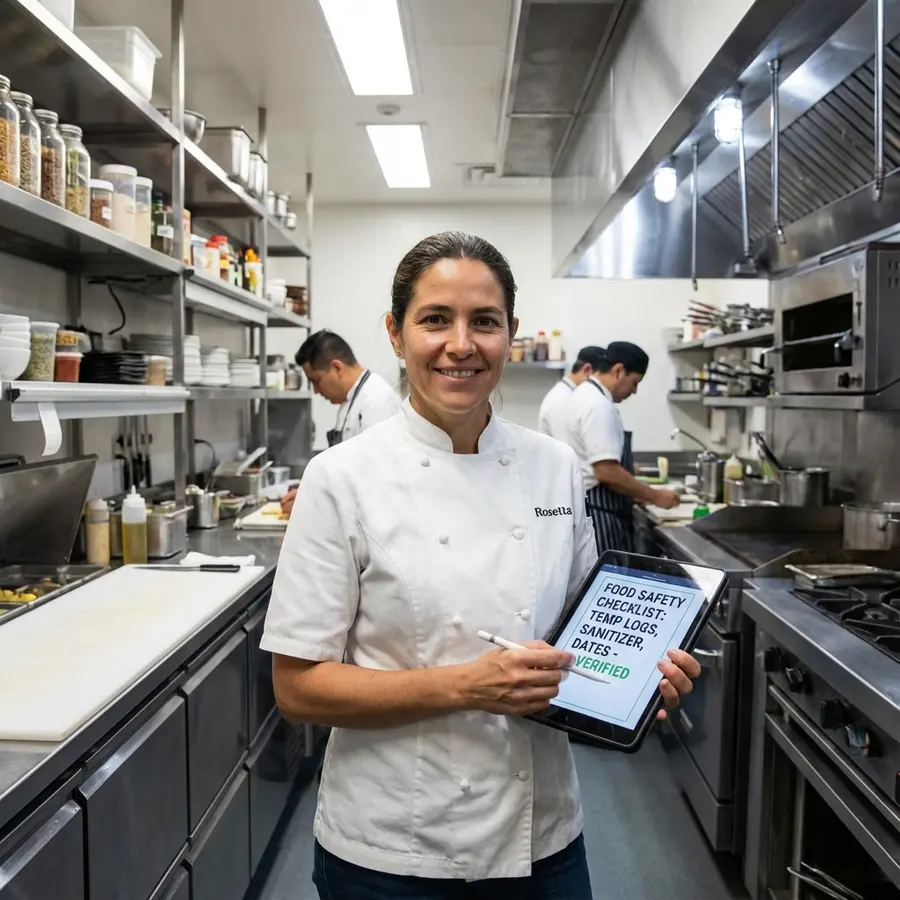

De problema operativo a SaaS vendible
Traduzco procesos reales de pymes en flujos claros, precios asumibles y producto usable desde el primer día.

Soy economista de formación y hoy estoy centrado en crear software para pequeñas empresas. Antes pasé por el sector financiero y por la gestión diaria de empresas retail, así que cuando pienso en un producto no empiezo por la tecnología: empiezo por el problema real que le quita tiempo, control o dinero a una pyme.
Con Leonix estoy construyendo herramientas SaaS sencillas para tareas que muchas empresas todavía resuelven con papel, hojas sueltas o procesos demasiado manuales. hAppcc, CronoSystem y StockEntry nacen de esa idea: aplicaciones prácticas, con precios asumibles y sin implantaciones eternas.
Me gusta estar cerca de todo el proceso: hablar con usuarios, decidir qué merece la pena construir, programarlo, probarlo y explicar el producto de forma clara.
Leonardo Manuel Méndez
Madrid, España
www.leonix.es
+34 638 869 158
leonardommendez@gmail.com
Desarrollo software SaaS para pymes con una idea clara: tecnología útil, precios accesibles y adopción sencilla. Leonix nace para resolver problemas reales de seguridad alimentaria, control de presencia y gestión de inventarios.
Actualmente el foco principal es hAppcc, una aplicación para digitalizar registros APPCC con modo local, demo gratuita y opción Cloud para sincronizar varios dispositivos. En paralelo, estoy preparando CronoSystem y StockEntry como nuevas líneas de producto.
Base en análisis financiero, gestión y lectura económica del negocio. Esta formación me ayuda a evaluar costes, márgenes, procesos y prioridades antes de convertir una idea en producto.
Desarrollo, implementación y mantenimiento de aplicaciones multiplataforma, con atención a bases de datos, interfaces, calidad, documentación y despliegue de soluciones orientadas a uso real.
Lo que aporto: visión de negocio, criterio financiero, gestión de producto, desarrollo de software y ejecución comercial para llevar una idea desde el problema hasta una solución vendible.
Traduzco procesos reales de pymes en flujos claros, precios asumibles y producto usable desde el primer día.
Construyo aplicaciones offline-first, backend y sincronización cloud con foco en estabilidad, coste y mantenimiento.
He gestionado negocios de retail y alimentación, equipos y logística; por eso diseño software pegado a la realidad diaria del usuario.
Leonix es mi empresa de software. Su misión es democratizar tecnología para pequeñas empresas: herramientas potentes, fáciles de usar y con costes razonables para resolver tareas operativas que hoy siguen consumiendo tiempo, papel y control manual.
APPCC, control horario y stock con IA. Productos pensados para negocios que necesitan digitalizarse sin contratar una implantación pesada.
Visitar LeonixDiseño la propuesta de valor, hablo con usuarios, priorizo funcionalidades, desarrollo la base técnica y preparo la comunicación comercial. Leonix no es solo un escaparate de código: es una empresa en construcción, con productos, clientes objetivo y decisiones de negocio reales.

Aplicación para digitalizar registros APPCC con demo gratuita, modo local desde 1,99 €/mes y Cloud por 4,99 €/mes por empresa cuando se necesita sincronizar varios dispositivos.
Sistema de control de asistencia para microempresas que necesitan cumplir con el registro de jornada de forma sencilla y sin añadir complejidad al día a día.
Producto para recepción de mercancías que usa inteligencia artificial para leer albaranes, revisar entradas y detectar errores antes de que se conviertan en pérdidas.